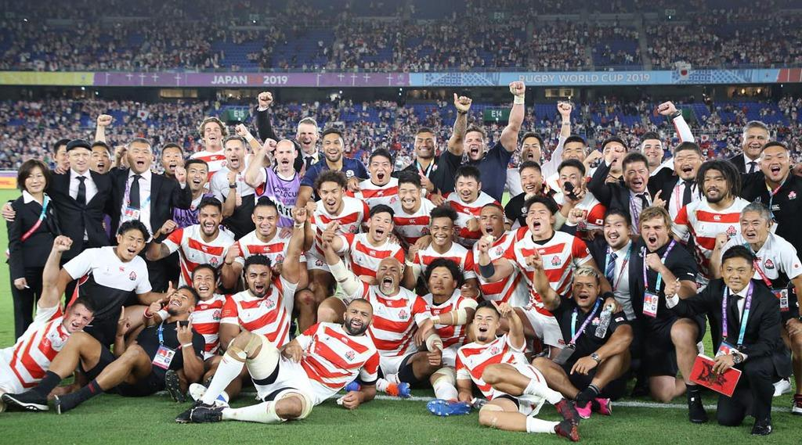

ラグビーW杯スコットランド戦 日本勝利の瞬間に最高53.7%
 日本テレビが13日に生中継したラグビーW杯「日本―スコットランド」（日本テレビ、後7・30～9・54）の平均視聴率は39.2％（関東地区、ビデオリサーチ調べ）だったことが15日、分かった
今年放送された全番組を通して、5日に生中継されたラグビーW杯「日本―サモア」（日本テレビ、後7・15～9・34）の32・8％を超えて1位となった。ジャパンの躍進とともに、注目度も上昇している
瞬間最高視聴率は、午後9時41分の53.7％で、日本がスコットランドの猛攻に耐え抜き、ラックから出たボールを山中が蹴り出して史上初の決勝トーナメント進出を決めた場面だった。
関西地区でも平均視聴率が37・2％、瞬間最高視聴率は52・2％で関東地区と同様にノーサイドの瞬間だった。
9月20日に生中継された開幕戦「日本―ロシア」（後7・30～9・54）の平均視聴率は、関東地区で18・3％、瞬間最高視聴率は25・5％をマーク。また、同28日にNHK総合で生中継された「日本―アイルランド」の平均視聴率は、関東地区で前半（後4・05～5・08）が15・3％、後半（後5・10～6・31）が22・5％で、瞬間最高視聴率は28・9％を記録した。
試合は、日本がスコットランドを28―21で破り、1次リーグA組4戦全勝、総勝ち点19として同組1位で準々決勝進出を決めた。1987年に第1回が始まったW杯で、9大会連続出場中の日本の8強入りは史上初の快挙となった。ジェイミー・ジョセフ・ヘッドコーチ（49）、リーチ・マイケル主将（31＝東芝）を中心とした「ONE TEAM」が、日本のラグビー界に金字塔を打ち立てた。日本は20日の準々決勝で、B組2位の南アフリカと対戦する。